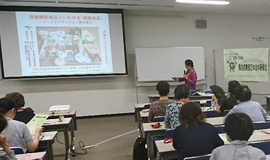
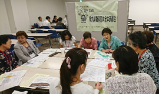

|
埼玉県委託事業 埼玉県消費者団体連絡会 |
7月13日(金)、埼玉県委託事業「県内消費者団体全体研修会」をさいたま市浦和コミュニティセンター第15集会室で開催し、20消費者団体53人が参加しました。参加者は食に関する正しい知識について学び、午後からは日頃の活動について交流しました。 この研修会は「自立した消費者の育成と消費者団体の活性化を目指す」埼玉県の委託事業として開催しています。研修を通して、県内の消費者団体の相互理解とネットワークを強め、活発な活動につなげることを目的に、学習や活動の情報交換・交流をおこなっています。 参加者 20団体53人 上尾市消団連、医療生協さいたま、エコ生活ガイド草加、桶川市くらしの会、春日部市くらしの会、加須市くらしの会、行田市くらしの会、さいたま市消費者団体連絡会、埼玉消費者被害をなくす会、埼玉県消費生活コンサルタントの会、埼玉県西部地区消費者団体活動推進世話人会、埼玉県生活協同組合連合会、埼玉県地域婦人会連合会、埼玉公団住宅自治会協議会、志木市くらしの会、新日本婦人の会埼玉県本部、生活協同組合コープみらい、生活協同組合パルシステム埼玉、めぬまくらしの会、埼玉県消費者団体連絡会 1．学習会 群馬大学名誉教授の髙橋久仁子さんを講師にお迎えし『保健機能食品といわゆる「健康食品」～フードファディズムに要注意！！～』と題して学習をおこないました。今回の学習会では、「食に関する正しい知識」について学ぶことを目的に、トクホ、機能性表示食品、いわゆる健康食品の基本的な学習、氾濫する食に関する情報に惑わされることなく、消費者が身につけなければいけない力について学びました。参加者からは「私たちがしっかりとした食の知識を持ち、情報に流されることなく、判断できる力をつけなければいけないと思った」などの感想が寄せられました。 2．交流 午後からは4つのグループにわかれて、活動の交流をおこないました。今回の交流は、参加した団体の皆さんが自分たちの活動に自信を持ち、元気になって帰ることができるように、自分たちの活動の良いところを発表し合う「いいとこ探し」をしました。交流の中では各団体が工夫しておこなっている取り組みが報告され、参加者からは「自分の団体でも、ぜひやってみたい」「良い活動のヒントがもらえました」などの感想が寄せられました。 |